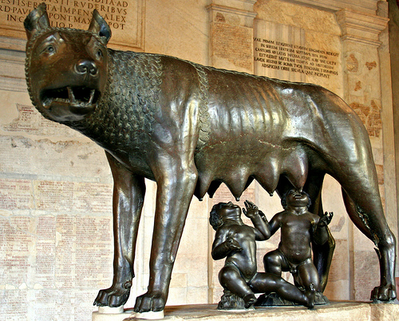
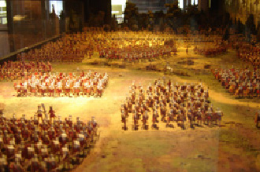

Hallo, ik ben Mees Post en afgelopen zomer ben ik voor het eerst in Rome geweest.
De ons bekende versie van het ontstaan van Rome danken we aan Vergilius (Aeneis) en (vooral) aan Titus Livius (Ab Urbe Condita) die in opdracht van Keizer Augustus de geschiedenis van Rome te boek stelden, op basis van de overleveringen die daarover de ronde deden. Beide werken hebben echter een sterk mythologische inslag en beogen niet een geschiedkundig werk in de huidige zin te zijn, maar dienden eerder om een goddelijke oorsprong en roemrijk verleden te suggereren door de oorsprong van Rome te verbinden met de ondergang van Troje.
 Rome werd volgens de mythe gesticht op 21 april van het jaar 753 v.Chr. door Romulus en Remus, afstammelingen van de Trojanen die onder leiding van Aeneas, zoon van Venus en Anchises, uit het brandende Troje waren gevlucht., dit is ook het begin van de Romeinse tijdrekening.
Volgens archeologen is Rome ontstaan in een viertal stappen.
De christelijke gemeenschap in Rome, waaraan wie de brief gericht is, werd niet door Paulus gesticht en Paulus heeft deze gemeenschap ook nog nooit bezocht op het moment dat hij deze brief schrijft. Hij is dit echter wel van plan, en dat is dan ook de aanleiding voor de brief. Paulus beschouwt zijn werk in Klein-Azië en Macedonië als afgerond en hij is van plan om naar Spanje te reizen. Op weg daarheen wil hij de christenen in Rome een bezoek brengen en hij hoopt dat zij hem ook zullen ondersteunen bij zijn reis naar Spanje. Maar eerst wil hij nog naar Jeruzalem reizen om daar de opbrengst van een collecte, die christenen in Macedonië en Achaea voor de christenen in Jeruzalem gehouden hebben, heen te brengen. Volgens Handelingen van de Apostelen is het echter niet helemaal zo gelopen als Paulus verwacht had: hij wordt in Jeruzalem gearresteerd en, nadat hij als Romeins burger een beroep op de keizer doet, in gevangenschap naar Rome gebracht. ff="http://nl.wikipedia.org/wiki/Rome_%28stad%29">Rome

Gaius Caesar Augustus Germanicus (Antium, 31 augustus 12 - Rome, 24 januari 41), postuum bekend als Caligula, was van 37 tot 41 princeps van Rome. Caligula's jeugd werd getekend door de intriges van de eerzuchtige Seianus. Na een hoopvol begin van zijn regering, begon hij zich na een periode van persoonlijke tegenslag meer en meer te gedragen als autocratisch heerser, waarbij hij zijn bevoegdheden onder meer aanwendde om in hoogverraadprocessen talrijke senatoren naar willekeur ter dood te veroordelen. Een geslaagde moordaanslag van de Praetoriaanse garde maakte een einde aan zijn schrikbewind, dat gevolgd werd door een damnatio memoriae door de senaat.
Damnatio memoriae (Latijn: "vervloeking van de nagedachtenis") is een term voor het onteren van een dode door het wegnemen van de herinnering aan die persoon uit de collectieve herinnering. Vormen van dergelijke ontering zijn bekend sinds de tijd van de Akkadiërs. De Romeinse senaat kon deze maatregel gebruiken tegen verraders of afvalligen van de staat. De Romeinse senaat kon verschillende juridische technieken toepassen tegen overleden verraders of afvalligen aan de staat: memoriam damnare (in nagedachtenis vervloeken) memoriam condemnare (veroordelen) memoriam accusare (beschuldigen) memoriam abolere (vernietigen) memoriam eradere (uitwissen)